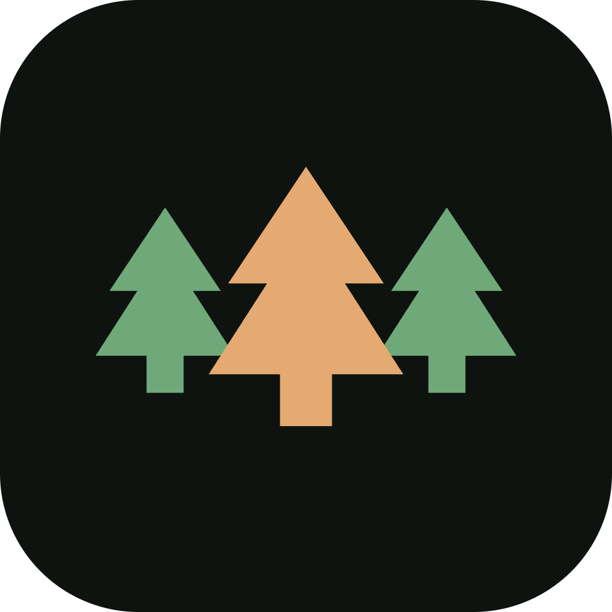

gran·lund · sv. · spruce grove · osThat job page I sent you — the one with your Ford authorization pre-drafted and every field copy-paste ready? An agent built that in minutes, on my laptop, for free. This page is the plain-language version of what that is, how it works, and why it matters for a shop like yours. No signup, no seat licenses, no demo call. Just the truth about where the leverage moved.
Spruce Grove OS is an agent harness that lives on your own machine. You tell it what you need in plain English — "build a page with the customer's key specs so Ford authorization is a copy-paste" — and it builds it, runs it, and keeps it maintained. Locally. Under your control. The software world spent fifteen years teaching shops to rent their own workflow back, one seat per month, forever. This is the opposite: the license is MIT, the data lives in files you own, and nothing phones home to survive.
Your jobs, customer info, and credentials live in files and SQLite on your own hardware. There's no vendor database full of your customers to breach, no price hike holding your workflow hostage. If every software company vanished tonight, nothing you built stops working.
Any AI brain (OpenAI, Anthropic, Gemini, local) plugs in with one config line — they're rented commodities. What you own is the harness: the permission gates, the approval steps, the skills, the memory. That asset compounds; the model bill doesn't.
The agent drafts; you send. Anything consequential waits for a yes from a human. API keys stay in local config, customer PII stays out of prompts. The harness makes the careful path the easy path.
No mockups. All of it shipped. All of it owned by the people who use it.
Every line of that runs on your machine, works with the tools you already trust, and replaces zero of your judgment. It just removes the screen-shaped obstacles between you and the customer in front of you.
Model calls send prompt text to the model provider over encrypted connections — so keys stay in local config, customer PII stays out of prompts by default, and consequential actions wait for a human yes. The harness can't make carelessness impossible; nothing can, and anything claiming to is selling you something. Spruce Grove OS is MIT licensed and built from Code Puppy by Michael Pfaffenberger — the lineage is stated in writing, because "rooted in honest and true" has to include your sources.
# one evening, a few dollars of usage, on your own Mac or PC git clone https://github.com/t-granlund/SPRUCE-GROVE-OS cd SPRUCE-GROVE-OS uv sync uv run spruce-grove # then just tell it what you need, like you'd tell Jonah: "Draft the Ford authorization packet for this VIN."